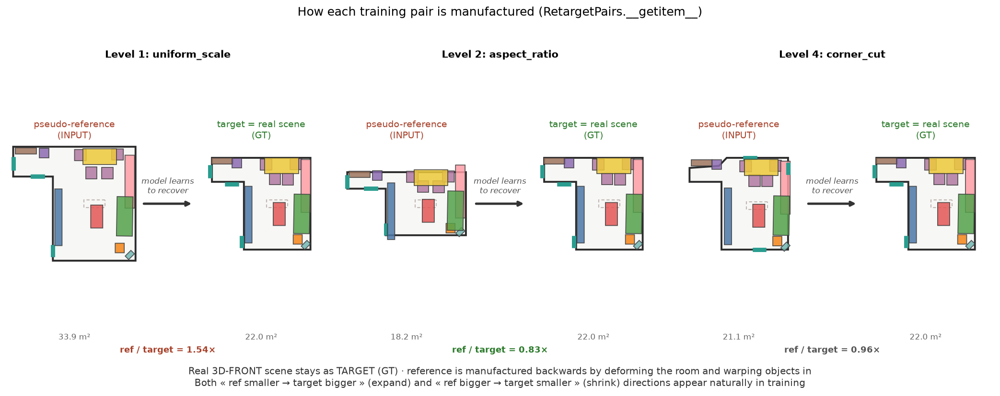
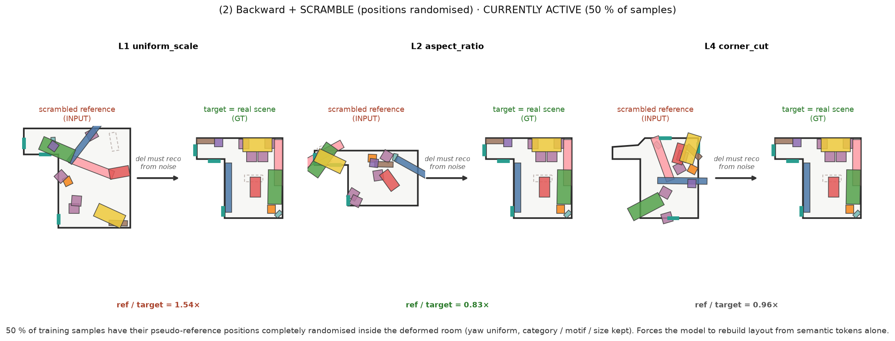
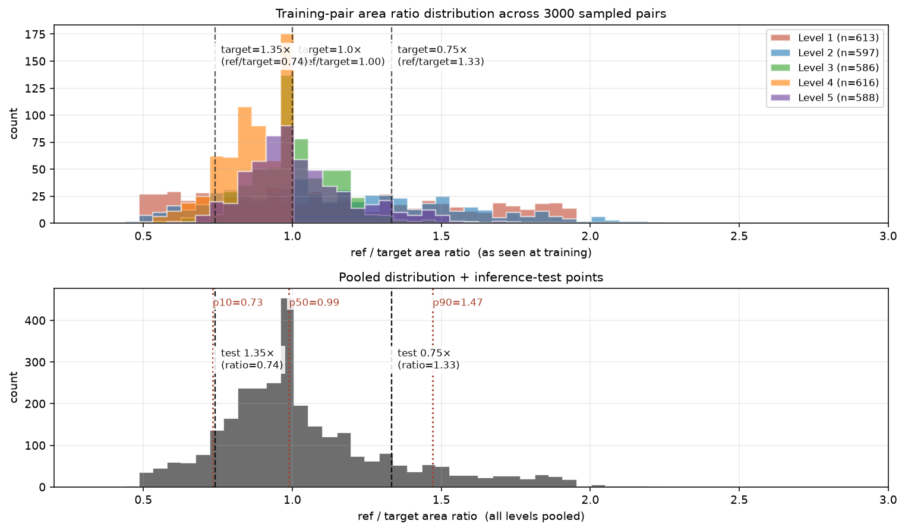

ReRoom · 最終做法
參考導向的 3D 室內設計 retargeting — 最終 shipped pipeline
問題:給一張使用者喜歡的房間設計 + 一個形狀 / 大小可能完全不同的目標房間,自動把設計搬過去 — 保留原本的關係與 motif,佈局符合新房間幾何。
Pipeline
- 意圖抽取:參考房影像 → MIDI-3D → 場景 + 物件圖 → 加上關係彈性 αij(神經 MLP 學出來)
- Summarise & Substitution(§9 § 11):房間變小先刪 motif,再從 asset bank 換成塞得下的較小家具(在 flow 之前,避免硬塞被 collision 推散)。Anchor 保護:每個房間類型的核心家具(客廳 sofa、臥室 bed 等)永遠不刪 — 若塞不下就交給 substitution 換小版本
- Flow Transformer(§13 前半):DiT 33 M 參數,意圖圖 + α 進 attention bias,ODE 50 步生成 k=16 個候選佈局。In-sampling guidance:每步都算 Ebound + Ecol + Eclear + wall_pull 的可行性梯度,融進 ODE trajectory
- Polish(§13 eq (37) 後半):每個候選跑 25 步 Adam,對 § 8 六個能量做梯度下降,freeze_yaw(朝向由 flow 決定),疊四個機制:
- ① 異方性 anchor:tangent 100 + normal 單向(只懲罰往房間中心飄)
- ② 親子相對 anchor:motif child 對齊「相對 parent 偏移」,parent 動則整組跟
- ③ Phase 1(前 12 步):E_col × 0.15、tangent × 0.10 → wall 物件斜滑到牆
- ④ Phase 2(後 13 步):恢復全能量 → 消碰撞、貼合
- Population(§10):房間變大時依 co-occurrence 新增家具,守門要求「加入後成本不變」
- Ranking:全 7 個 §8 能量算 E(Y),k 個候選挑最佳
實際輸出

6 場景平均實測
| Size | mean float | max float | OOB % | col % | Srel |
|---|---|---|---|---|---|
| 0.75× 縮小 | 8.2 cm | 40.9 cm | 2.8 % | 2.0 % | 0.41 |
| 1.00× 原尺寸 | 11.4 cm | 54.5 cm | 1.7 % | 4.0 % | 0.92 |
| 1.35× 放大 | 25.2 cm | 100.0 cm | 1.6 % | 2.2 % | 0.88 |
Mean float 略高於單純 Anisotropic + Polish 版本,是因為 anchor 保護(客廳的 sofa、臥室的 bed 不會被 summarise 刪除)保留了原本會被丟掉的物件 — 輸出更完整(sofa 進了 mean 分母),但 Srel(motif 保存度)反而 更高(1.35× 0.87 → 0.88)。
算法細節(公式與變量)
符號表(全文統一)
| 符號 | 意義 | 單位 / 範圍 |
|---|---|---|
| \(N\) | 物件數 | – |
| \(x_i \in \mathbb{R}^2\) | 物件 \(i\) 在房間 MRR-normalized 座標系的位置 | \(u, v \in [-1, 1]\) |
| \(\theta_i\) | 物件 \(i\) 的 yaw | 弧度 |
| \(s_i \in \mathbb{R}^2\) | 物件 \(i\) 的 footprint 半尺寸(local 座標) | 米 |
| \(x_i^{(0)}\) | polish 起點:flow 取樣的位置 | 同 \(x_i\) |
| \(\hat n_i,\ \hat t_i\) | 物件 \(i\) 在 reference 靠的牆的 inward normal / 切向 | 單位向量 |
| \(a_i \in [0, 1]\) | wall affinity(reference 中靠牆程度) | – |
| \(\alpha_{ij} \in [0, 1]\) | 關係彈性:0 = 彈性,1 = 剛性 | – |
| \(\hat x_1\) | flow 對 \(x_1\) 的當前預測 = \(x_\tau + (1-\tau) v_\theta\) | 同 \(x\) |
| \(\tau\) | flow matching 時間 | \([0, 1]\) |
| \(w_\text{tan}, w_\text{norm}, w_\text{free}\) | anchor 各分量權重 | – |
1. 關係彈性 \(\alpha_{ij}\)
每對物件 \((i, j)\) 有一個彈性係數,由 MLP 從關係 context 學:
$$\alpha_{ij} = \sigma\!\big(\text{MLP}(c_i,\, c_j,\, e_{ij})\big)$$- \(c_i\):物件 \(i\) 的 category 嵌入 + \(\log s_i\) + motif id + 房間類型
- \(e_{ij}\):關係向量(距離、相對角度、共牆 / 共 motif 指示)
- \(\alpha_{ij} \to 1\):剛性,搬房間時距離要保留(nightstand ↔ bed)
- \(\alpha_{ij} \to 0\):彈性,距離可隨房間放縮(tv ↔ sofa)
2. Flow matching:訓練與取樣
State \(x_1 \in \mathbb{R}^{N \times 4}\):每個物件的 \((u_i, v_i, \cos\theta_i, \sin\theta_i)\)。
訓練:\(\tau \sim \text{Uniform}(0, 1)\),\(x_0 \sim \mathcal{N}(0, I)\)
$$x_\tau = (1-\tau)\,x_0 + \tau\,x_1, \qquad v_\text{target} = x_1 - x_0$$ $$\mathcal{L}_\text{fm} = \big\|\,v_\theta(x_\tau, \tau, G, P_t) - v_\text{target}\,\big\|^2$$- \(G\):意圖圖(節點 = 物件,邊帶 \(\alpha_{ij}\) 與 relation type,進 attention bias)
- \(P_t\):目標房邊界 32 個取樣點,每點 6 維 \((u, v, u\cdot h_1, v\cdot h_2, n_u, n_v)\)——normalized 位置給形狀 prior,metric 位置給尺度 prior
取樣:50 步 Euler,\(x_{\tau + d\tau} = x_\tau + d\tau \cdot v_\theta\)。
3. In-sampling guidance(§13 eq (37) 前半)
每步 ODE 之後,估計最終位置 \(\hat x_1 = x_\tau + (1-\tau)\, v_\theta\),對可行性打分並反傳梯度:
$$\Phi(\hat x_1) = w_\text{bound}\,E_\text{bound} + w_\text{col}\,E_\text{col}^{\text{nest-exempt}} + w_\text{clear}\,E_\text{clear} + w_\text{wp}\,E_\text{wall-pull}$$ $$x_{\tau + d\tau} \;\leftarrow\; x_{\tau + d\tau} - d\tau \cdot \text{ramp}(\tau) \cdot \nabla_x \Phi$$ $$\text{ramp}(\tau) = \max\!\big(0,\, (\tau - 0.5) / 0.5\big)$$其中 \(E_\text{bound}\) 懲罰 4 角超出 polygon 深度(容忍 12 cm);\(E_\text{col}\) 對 nestable pair(椅塞桌下)豁免;\(E_\text{clear}\) 跨 motif pair 走道;\(E_\text{wall-pull}\) 見 § 8。
4. Polish 目標:能量之和 + anchor
對每個候選 layout,25 步 Adam,freeze_yaw:
$$\mathcal{L}_\text{polish}(x) = \sum_k w_k\, E_k(x) + \mathcal{L}_\text{anchor}(x), \quad k \in \{\text{rel, bound, col, clear, func, style}\}$$| \(E_k\) | 形式(概要) | 意義 | \(w_k\) |
|---|---|---|---|
| \(E_\text{rel}\) | \(\sum_{ij}\alpha_{ij}\,\big\|\phi(y_i, y_j) - \phi_{ij}^\text{ref}\big\|^2\) | 保留 reference 關係向量(距離、角度、共牆) | 1.0 |
| \(E_\text{bound}\) | \(\sum_i \max(0,\, r_i - d_i^\text{floor})^2\) | 物件保持在 floor polygon 內 | 40.0 |
| \(E_\text{col}\) | \(\sum_{ij \notin \mathcal{N}}\max(0,\, r_i + r_j - d_{ij})^2\) | 非 nestable pair 不重疊 | 30.0 |
| \(E_\text{clear}\) | \(\sum \max(0,\, C - \text{gap}_{ij})^2\) | 跨 motif pair 走道 \(C = 25\) cm | 4.0 |
| \(E_\text{func}\) | wall_flush + door swing + front clearance | 靠牆貼合、開門通、正面留距 | 3.0 |
| \(E_\text{style}\) | \(\sum_i \text{retrieval\_cost}_i\) | 替換的 asset 越近 reference 風格越好 | 1.0 |
\(E_\text{edit}\)(使用者手動 constraint)shipped path 沒接,\(w_\text{edit} = 0\)。
5. Anisotropic anchor(新)
令位移 \(\delta_i = x_i - x_i^{(0)}\)。對高 wall affinity物件(\(a_i > 0.3\)),把位移沿牆法線與切線分解:
$$\delta_i^n = \delta_i \cdot \hat n_i, \qquad \delta_i^t = \delta_i \cdot \hat t_i$$ $$\mathcal{L}_\text{anchor}^{(i)} = a_i \Big[\, w_\text{tan}\,(\delta_i^t)^2 + w_\text{norm}\,\big(\text{ReLU}(\delta_i^n)\big)^2 \,\Big] + (1 - a_i)\, w_\text{free}\,\|\delta_i\|^2$$- \(w_\text{tan} = 100\):切向強懲罰 → 鎖住牆邊排列次序
- \(w_\text{norm} = 8\):法線單向懲罰,只罰 \(\delta_i^n > 0\)(往房間中心飄);\(\delta_i^n < 0\)(靠向牆)完全免罰
- \(w_\text{free} = 100\):非靠牆物件用普通對稱 L2
- \(\hat n_i\) 決定方式:找 reference 房間裡物件 \(i\) 真正靠的牆 index,對映到 target 房間同 index 的牆;用 signed-area 判 CCW/CW,再用 polygon.contains 探點驗證方向
6. Parent-child relative anchor(新)
對 motif 中非 head 的 child 物件 \(c\),parent \(p = \text{head}(c)\),把 \(\delta_c\) 換成:
$$\delta_c^\text{rel} = \big(x_c - x_p\big) - \big(x_c^{(0)} - x_p^{(0)}\big)$$然後 \(\delta_c^\text{rel}\) 代入 § 5 anchor 損失。當 parent 被 wall pull 拉向牆,\(x_p\) 移動,child 的相對偏移保持不變,child 跟著整組移動,不撕裂 motif。
7. 二階段能量排程(Plan A)
25 步 Adam 拆兩段,\(T_1 = 12\)(50 %):
$$\text{Phase 1 }(t < T_1):\quad w_\text{col} \leftarrow 0.15\,w_\text{col}^\text{full}, \quad w_\text{tan} \leftarrow 0.10\,w_\text{tan}^\text{full}$$ $$\text{Phase 2 }(t \ge T_1):\quad \text{恢復所有 weights}$$Phase 1 讓 wall 物件擺脫 E_col 阻擋 + tangent 死鎖,順暢斜滑到牆;Phase 2 就地消碰撞、貼合。
8. Wall pull 具體形式(在 § 3 guidance 內)
對高 wall affinity 物件,計算背面到牆的深度:
$$d_i^\text{back} = \max\!\big(0,\; (x_i - x_i^\text{wall-anchor}) \cdot \hat n_i \,-\, h_i^\perp \,-\, \delta_\text{flush}\big)$$ $$E_\text{wall-pull} = \lambda_w(\rho)\,\sum_i a_i\,\big(d_i^\text{back}\big)^2$$- \(h_i^\perp = |s_i \cdot \hat n_i\text{-basis proj}|\):物件在牆法線方向的半深度(米)
- \(\delta_\text{flush} = 6\) cm(容忍)
- \(\rho = \text{Area}_\text{target} / \text{Area}_\text{ref}\):房間面積比
- \(\lambda_w(\rho) = \begin{cases} 2.5 & \rho \le 1 \text{ (縮小房,推力大)} \\ 1.5 & \rho > 1 \text{ (放大房,避免撞飛出界)}\end{cases}\)
訓練資料(現在真的產生的樣子)
每個訓練 sample 都是一對「pseudo-reference → 真實場景」:真實 3D-FRONT 場景保留當 target(自帶 GT layout),reference 反向製造 — 把場景的 room deform、物件用 affine warp 帶進去,一起餵給 model。天然涵蓋放大 / 縮小兩個方向。

另外 50 % 的樣本會啟用 Scramble 增強:pseudo-reference 的物件位置完全隨機、朝向也隨機,類別與尺寸保留。強迫 model 從語意訊號(category、motif、wall_affinity、boundary)重建佈局,而不是複製 pseudo。類 LEGO-Net 精神,融進 flow matching。

面積比分布
